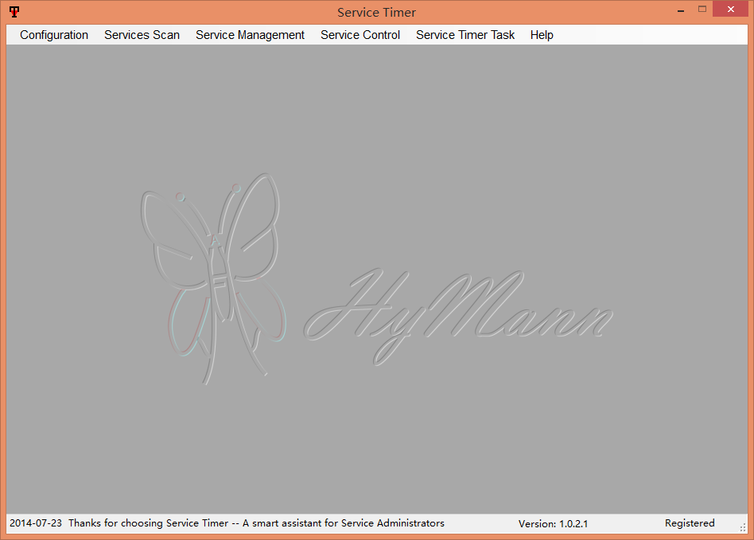

|
Service Timer is a small, fast, reliable and easy-to-use tool for service administrators to make their routine work much easier. It is agent-less, which means that no software needs to be installed on the network computers for full control. It can control all services, or run service, programs in your LAN on time on one computer, and need not to login logout one by one computer on remote desktop! It's the helpful tool for the administrators who have lots of managed hosts. It's useful when you have more services or programs to manage in the local intranet or the equipment room, even without active directory. Service Timer is designed to help reduce costs, increase efficiency and reduce errors! It doesn't need domain server or Active Directory. You can work more easily in workgroup. 
Service Timer is for those who need to
|
 Download The Help Of Service Timer Download The Help Of Service Timer |
|
| Download full version for a 15-day trial for FREE 30-day money back after purchase |
|
System RequirementsSoftware Requirements
Hardware Requirements
|
|